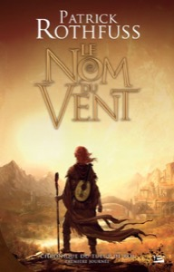
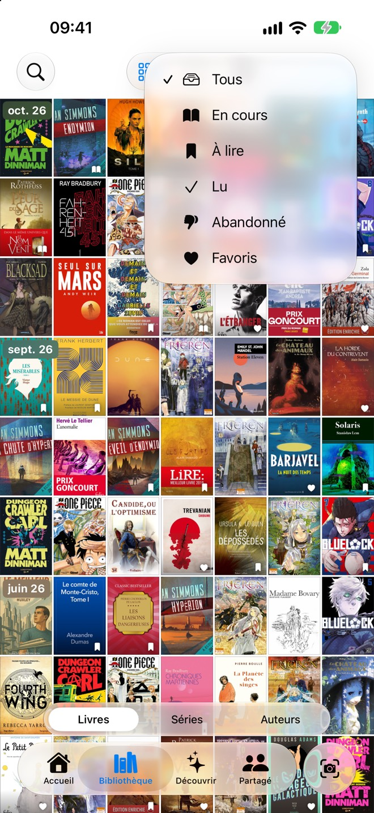
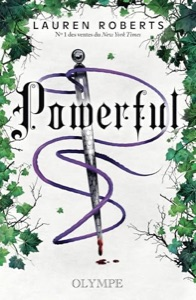

Pas de code-barres à chercher, pas d'ISBN à taper. Titre, auteur, série, genre, éditeur et nombre de pages sont lus sur la couverture, même celle d'une vieille édition. Une ligne fausse ? Touchez-la pour la corriger.
Toute la bibliothèque, d'un coup d'œil.
Votre bibliothèque en mosaïque, classée par date. Retrouvez vos favoris d'un geste, filtrez et triez pour tomber sur le livre que vous cherchez.
Vos séries et vos auteurs se rangent tout seuls.
Chaque tome rejoint sa série dès qu'il entre, chaque livre son auteur. Une coche sur ceux que vous avez lus, la note que vous avez donnée, et où vous en êtes.
Retrouvez n'importe quel livre.
Un titre, un auteur, une série : la recherche trouve dès les premières lettres. Filtrez vos favoris, vos lectures en cours, à lire ou lues, et retrouvez d'un geste les livres vus récemment et vos dernières recherches.
Chaque mois, de nouvelles lectures sur mesure pour vous.
Des livres que vous n'avez pas encore, choisis à partir de votre bibliothèque, de vos coups de cœur et de vos notes, chacun avec la raison de ce choix.
Vos statistiques de lecture.
Livres lus, pages tournées, heures écoutées, lectures en cours : votre année en chiffres. Les dates se déduisent de vos gestes, vous ne tapez jamais rien.
Des statistiques approfondies.
Votre signature de lecteur, les genres que vous lisez vraiment et ceux qui restent à explorer, vos formats, vos notes moyennes et vos lectures les plus rapides.
Le prochain tome, avant sa sortie.
Chacune de vos séries est suivie : le prochain tome annoncé avec sa date, et ceux déjà sortis qui vous manquent. Vous êtes prévenu le jour où il paraît.
Découvrez de nouvelles lectures.
Les coups de cœur de vos amis, les sorties de vos séries préférées, les prix littéraires de vos genres et, chaque mois, une sélection sur mesure tirée de vos livres, séries et auteurs préférés.
La lecture, entre amis.
Invitez vos amis : partagez vos coups de cœur et vos lectures du moment, et lancez-vous un défi pour l'année. Vos notes restent privées.
Tout ce qu'un lecteur attend.
Chaque livre trouve sa place, le reste se fait tout seul.
Dune1984Fahrenheit 451SolarisNeuromancienProjet Dernière ChanceLa Nuit des tempsHypérionSiloSeul sur MarsLes FurtifsFondation
0livres
Toute l'étagère en une photo
Photographiez un rayon entier : chaque tranche est reconnue, chaque livre reçoit sa fiche, et vous cochez ceux qui entrent. Trente livres d'un coup, sans en sortir un seul de l'étagère.
Vos sagas, tome par tome
Vos livres se rangent sous leur série. Ouvrez-en une : les tomes que vous avez, ceux qui vous manquent, et le prochain annoncé avec sa date.
Vos auteurs, livre par livre
Vos livres se rangent aussi sous leur auteur. Ouvrez-en un : ses sagas, les livres que vous avez, ceux qui vous manquent, et ce qu'il publie ensuite.
mardi 20 octobre9:41
Shiorimaint.
Prévenu des sorties et des découvertes
Le jour où paraît le prochain tome d'une série que vous suivez, sa traduction ou sa version audio. Chaque dimanche, les tomes nouvellement annoncés. Et chaque mois, vos nouvelles découvertes. Chaque alerte se désactive à part.
Kindle et Audible, synchronisés
Connectez vos comptes : votre bibliothèque existante arrive avec ses couvertures et ses sagas, puis reste à jour chaque nuit. Vous choisissez ce qui entre, et votre mot de passe ne nous est jamais transmis.
PapierLiseuseAudioMangaBDComics
Papier ou écran, un seul livre
Roman, manga, BD ou comics, sur papier, sur liseuse ou en audio : un livre est une seule fiche, avec un seul statut, une seule note et un seul avis.
La couverture de votre choix
Shiori rassemble les couvertures trouvées pour un livre : Kindle, Amazon, Open Library, d'autres éditions. Choisissez celle qui vous plaît, ou collez l'adresse d'une image.
Vos lectures en chiffres
Livres lus par an, pages lues, heures écoutées, genres préférés et votre signature de lecteur. Les dates se déduisent de vos gestes : vous ne tapez jamais rien.
Rien que pour vous
Chaque mois, quelques livres choisis d'après ce que vous avez aimé, les lauréats des prix dans vos genres, et les coups de cœur de vos amis.
Les grands prix, dans vos genres
Goncourt, Hugo, Nebula, Locus, Arthur C. Clarke et World Fantasy : tous les lauréats depuis la création de chaque prix, ceux que vous avez lus, et ceux qu'il vous reste à découvrir.
Project Hail Mary ENAndy Weir
Guetter en français
Guetter en audio
Guettez la VF ou l'audio
Un livre pas encore traduit, ou pas encore sorti en audio ? Guettez sa version française ou son livre audio, et soyez prévenu le jour de sa sortie.
Gardé pour Shiori
Partagez, Shiori retrouve le livre
Une capture d'écran, une page Amazon ou un titre copié : depuis n'importe quelle app, touchez Partager puis Shiori. Le livre est retrouvé et vous attend dans l'app, prêt à vérifier avant d'entrer dans votre bibliothèque.

Le Nom du ventPatrick Rothfuss
The Name of the Wind ENPatrick Rothfuss
Frieren ENKanehito Yamada
Dans toutes les langues
Une VO sur l'étagère, un livre audio en anglais : chaque édition garde sa langue, et Shiori retrouve sa couverture, son résumé et sa série dans cette langue.

Filtrez, triez, retrouvez
Livres, sagas et auteurs se filtrent sur En cours, À lire, Lu, Abandonné ou vos favoris. Les auteurs se trient par date, par ordre alphabétique ou par coups de cœur.
Séries
HypérionLes Cantos d'Hypérion · 4 tomes
Livres
HypérionDan Simmons
La Chute d'HypérionDan Simmons
Toute votre bibliothèque, en un mot
Un titre, un auteur ou une série : tapez quelques lettres, les sagas puis les livres apparaissent, le mot trouvé surligné. Vos dernières recherches vous attendent avant même de taper.
La Horde du ContreventAlain Damasio
Les cinquante premières pages demandent un effort, puis on ne lâche plus la Horde. Prêté à Guillaume en mars.
Un commentaire sur chaque livre
Ce que vous en avez pensé, une citation, à qui vous l'avez prêté : chaque livre garde votre commentaire. Il reste à vous, jamais montré à vos amis.
Projet Dernière ChanceAndy Weir
Conseillé parLamia
Lis-le sans rien savoir, surtout pas la quatrième de couverture.
Qui vous l'a conseillé
Notez sur la fiche qui vous a conseillé le livre, et ce qu'on vous en a dit. Un livre repris dans la bibliothèque d'un ami porte son nom tout seul.
Entre amis
Invitez vos amis : chacun voit la bibliothèque de l'autre, ses coups de cœur et ses lectures du moment. Vos notes restent privées, et un livre masqué n'est jamais partagé.
Un défi pour l'année
Lancez-vous un défi entre amis : chacun lit à son rythme, et le classement de l'année montre qui mène la course, livre après livre.
DuneFrank Herbert
Dungeon Crawler CarlMatt Dinniman · 6 tomes
Fourth WingRebecca YarrosAbandonné
Des étoiles, des cœurs, et le droit d'abandonner
Notez de une à cinq étoiles un livre, ou une saga entière d'un coup. Un cœur pour vos favoris : ils se retrouvent d'un geste dans vos filtres, et vos amis découvrent vos coups de cœur. Un livre qui ne vous tient pas : marquez-le abandonné, il quitte vos lectures en cours. Vos notes restent privées.
LLamiaFavoriEn coursAjouté

Lu
GGuillaumeEn coursFavoriAjoutéAbandonné
Ne pas partager
Suivez leurs lectures
L'activité de chaque ami d'un coup d'œil : nouveaux favoris, lectures en cours, livres tout juste ajoutés ou abandonnés. Ouvrez la page d'un ami : toute sa bibliothèque est là. Et un livre que vous gardez pour vous : « Ne pas partager », vos amis ne le voient jamais.
Shiori face aux autres
Les autres lisent un code-barres. Shiori lit la couverture, et sait de quelle série et de quel tome il s'agit.
Goodreads
StoryGraph
Bookly
Gleeph
Shiori
Ajouter un livre
Code-barres
Code-barres
ISBN
Code-barres
La couvertureSérie et tome reconnus
Une étagère en une photo
Non
Non
Non
Non
Oui
Séries et tomes manquants
Non
Non
Non
BD et mangas
OuiTomes à paraître compris
Alerte à la sortie
Non
Non
Non
Non
OuiTome, traduction ou audio
Kindle et Audible
Depuis un Kindle
Non
Non
Non
Import et synchro
Entre amis
Oui
Oui
Non
Oui
OuiAvec un défi lecture
Prix
Gratuit, avec pub
3,99 € / mois
4,99 € / mois
1,99 € / mois
GratuitPremium 1,99 € / mois
D'après les fiches App Store françaises au 18 octobre 2026 : prix de l'offre payante de chaque app, toutes ayant aussi une offre gratuite. Goodreads lit la progression d'un Kindle, pas d'Audible.
Questions fréquentes
Pourquoi photographier la couverture plutôt que le code-barres ?
Parce que le code-barres ne dit pas grand-chose : un numéro d'édition, et rien sur la série ni le tome. La couverture, elle, porte le titre, l'auteur, le numéro du tome et l'éditeur. Shiori la lit, retrouve l'édition et remplit la fiche, y compris pour une édition ancienne, un livre de bibliothèque ou un manga sans code au dos. Vous vérifiez, vous corrigez une ligne si besoin, et le livre entre.
Combien ça coûte ?
Shiori est gratuite, avec cinquante scans offerts à l'inscription puis cinq chaque mois : de quoi tenir sa bibliothèque à jour. Premium, à 1,99 € par mois ou 17,99 € par an avec le premier mois offert, débloque les scans illimités, le scan d'une étagère entière et le catalogue complet de vos séries, tomes à paraître compris. Tout le reste, suivi, statistiques, Kindle, Audible, partage, est gratuit.
Comment marche la connexion Kindle et Audible ?
Vous vous connectez à Amazon dans sa propre page, comme dans l'app Kindle : votre mot de passe ne passe jamais par Shiori. Votre bibliothèque s'affiche, vous cochez ce qui entre, et chaque nuit Shiori va chercher les nouveaux achats et met à jour ce que vous avez lu ou écouté. Vous pouvez déconnecter à tout moment ; les identifiants sont chiffrés et supprimés avec votre compte.
Comment Shiori sait qu'un tome sort ?
Pour chaque série que vous lisez, Shiori cherche sur le web, une fois par semaine, le prochain tome annoncé dans la langue où vous la lisez, et sa traduction dans la vôtre si vous la lisez dans une autre. Une date est gardée telle qu'elle est annoncée, un mois ou un jour, et seule une date au jour déclenche une alerte, le matin de la sortie.
Que voient mes amis ?
Vos livres, vos favoris et vos lectures du moment, avec vos étoiles. Pas vos notes, qui restent privées. Un livre que vous masquez n'apparaît jamais chez personne. Vos amis ne voient pas non plus le catalogue de vos séries : seulement les livres.
Où vont mes données ?
Vous vous connectez avec votre compte Apple, qui peut masquer votre adresse e-mail. Votre bibliothèque est stockée en Europe, à Francfort. La photo d'une couverture sert à la reconnaître et n'est pas conservée. Supprimer votre compte efface tout, Kindle et Audible compris. Le détail est dans la politique de confidentialité.
Sur quels appareils ?
iPhone, avec iOS 26. L'app parle français et anglais, selon la langue de votre téléphone, et reconnaît les couvertures dans toutes les langues.
Gratuit, ou Premium sans limite
Tout Shiori est gratuit. Premium lève la limite des scans et lit une étagère entière d'un coup.
Gratuit0 €pour toujours
Premier mois offertPremium1,99 € / moisou 17,99 € par an
Scan d'une couverture
50 offerts, puis 5 / mois
Illimité*
Une étagère entière en une photo
Bibliothèque, séries et auteurs
Sorties annoncées et alertes
Découvertes du mois et grands prix
Kindle et Audible synchronisés
Amis, coups de cœur et défi lecture
Publicité
Aucune
Aucune
* Usage raisonnable : jusqu'à 100 scans par mois, et 500 offerts le jour où vous passez Premium. L'abonnement se gère et se résilie dans les réglages de l'App Store.